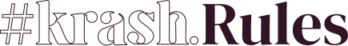

¿Quiénes somos?
KrahsKosmetics, fundada en agosto de 2018, es la primera marca de maquillaje sin género en España.
Creada con el objetivo de servir a todas esas personas que mantienen la industria de la cosmética viva,
pero que hasta ahora no han estado representadas en campañas, comunicación, expositores, etc.

Diverso, transfeminista, antirracista y anticapacista.
Sabemos que muchas marcas recurren al #pinkwashing durante fechas señaladas como el Orgullo para lavar su imagen y parecer más inclusivas y diversas de lo que realmente son. En Krash estamos completamente en contra de esta práctica, aportando todos nuestros recursos a la comunidad los 365 días del año. Porque a día de hoy, no sólo queda mucho por lo que luchar, sino muchos derechos ya conseguidos que quieren arrebatar.